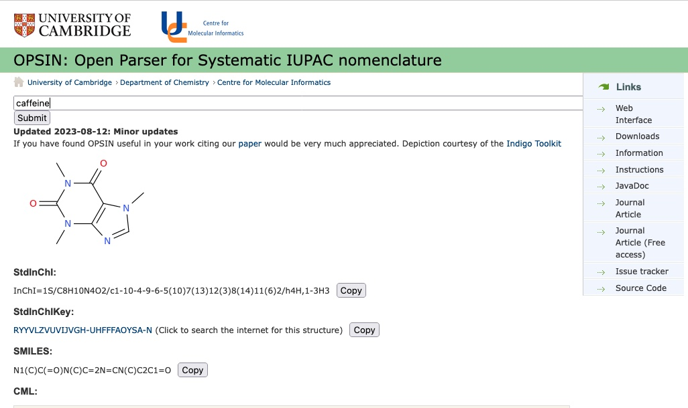

OPSIN: Open Parser for Systematic IUPAC Nomenclature#
About this tool
Author: Stuart Chalk
Reviewer: Leah McEwen
Function: IUPAC chemical name to chemical identifier converter
Format: Website form based queries and URL based API
Input: IUPAC systematic chemical name
Outputs: Standard InChI string, Standard InChIKey, SMILES, Chemical Markup Langauge (CML) XML, image (.png or .svg)
Usage: Instructions
Publication: https://doi.org/10.1021/ci100384d
Website: https://opsin.ch.cam.ac.uk
Application Programming Interface (API): https://opsin.ch.cam.ac.uk/opsin/
Endpoint: Chemical Markup Language file
.cml (e.g., https://opsin.ch.cam.ac.uk/opsin/benzene.cml) Endpoint: Standard InChI text file
.stdinchi (e.g., https://opsin.ch.cam.ac.uk/opsin/benzene.stdinchi) Endpoint: Standard InChIKey text file
.stdinchikey (e.g., https://opsin.ch.cam.ac.uk/opsin/benzene.stdinchikey) Endpoint: SMILES text file
.smi (e.g., https://opsin.ch.cam.ac.uk/opsin/benzene.smi) Endpoint: JavaScript Object Notation (JSON) file
.json (e.g., https://opsin.ch.cam.ac.uk/opsin/benzene.json) Endpoint: PNG Image file
.png (e.g., https://opsin.ch.cam.ac.uk/opsin/benzene.png) Endpoint: SVG Image file
.svg (e.g., https://opsin.ch.cam.ac.uk/opsin/benzene.svg)
GitHub Repository: dan2097/opsin
Citations: ‘OPSIN: Open Parser for Systematic IUPAC Nomenclature’, IUPAC FAIR Chemistry Cookbook, https://w3id.org/ifcc/IFCC001
Reuse: This resource is made available under a CC-BY-4.0 license.
{kind=link}
{kind=link}
Working with chemical data you quickly realize there are many situations where you want to augment a dataset with chemical identifiers, however they are not easy to find. This case arises where the compound/ion/complex/alloy you searching on is not very common and thus not in general databases like PubChem, Common Chemistry, or UniChem. However, as long as you have enough information to come up with a legitimate IUPAC name for a compound you are in luck.
OPSIN (Open Parser for Systematic IUPAC Nomenclature) is a relatively simple website where you can enter the IUPAC name for a compound and retrieve many common identifiers for the structure. OPSIN has been around in its current form since 2009 and was developed by Daniel Lowe as part of his PhD. Daniel has supported the site since then and continues to add updates as he can, based on user issues/requests.
OPSIN can be used by humans via the homepage where a single input box allows you to enter a valid IUPAC name (see figure below). If you don’t have an IUPAC name, and you don’t have time to learn all the naming rules, the site will return an error with information that the algorithm could not interpret. While this might seem like a big negative for the site, it can be used to fix misspelling of systematic names, and it is really useful as a teaching tool where you give students a structure and ask them to name it, checking the names with OPSIN. For data science OPSIN also has an API and returns information back in JSON for easy use within scripting languages and other tools.

OPSIN can deal with names that include greek letters and superscripts. It also has the capability to interpret mixtures of substances. This is useful for situations like getting identifiers for compounds with waters of hydration (try ‘copper sulfate hexahydrate’ or ‘copper sulfate pentahydrate’), solvates (try ‘(2-(Diphenylphosphino)ethyl)-trichloro-tin dichloromethane’ or ‘(2-(Diphenylphosphino)ethyl)-trichloro-tin dichloromethane (1:2)’), or alloys (try ‘aluminum magnesium cobalt (2:5:13)’ or ‘aluminum magnesium cobalt (3:3:4)’).
Overall, OPSIN is an indispensable resource that is a goto when all else fails.